3D animations of DFT trajectories in Blender
Hi all,
This is my first blog post, in which I’m going to explain how the animation from https://twitter.com/Jules_Oppenheim/status/1558944080306049024 was created.
The concept behind this animation is to begin with a molecule that the AI, DALL-E, has created, and watch the molecule as it relaxes to its ground state configuration.
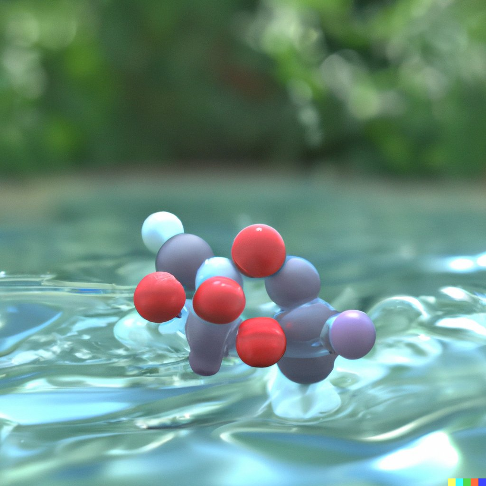
The first step is to create a .xyz file, containing a close approximation to the DALL-E creation. This can be accomplished using any computational chemistry software that contains a model building, including Avogadro, ADF, or Materials Studio. In this case, I chose to use Maestro (a free version can be downloaded from https://www.schrodinger.com/products/maestro). In the DALL-E image, we can assume by convention that the gray spheres are carbon, the red spheres are oxygen, and the white spheres are hydrogen. The identity of the purple is up to free interpretation, so here we can choose iodine.
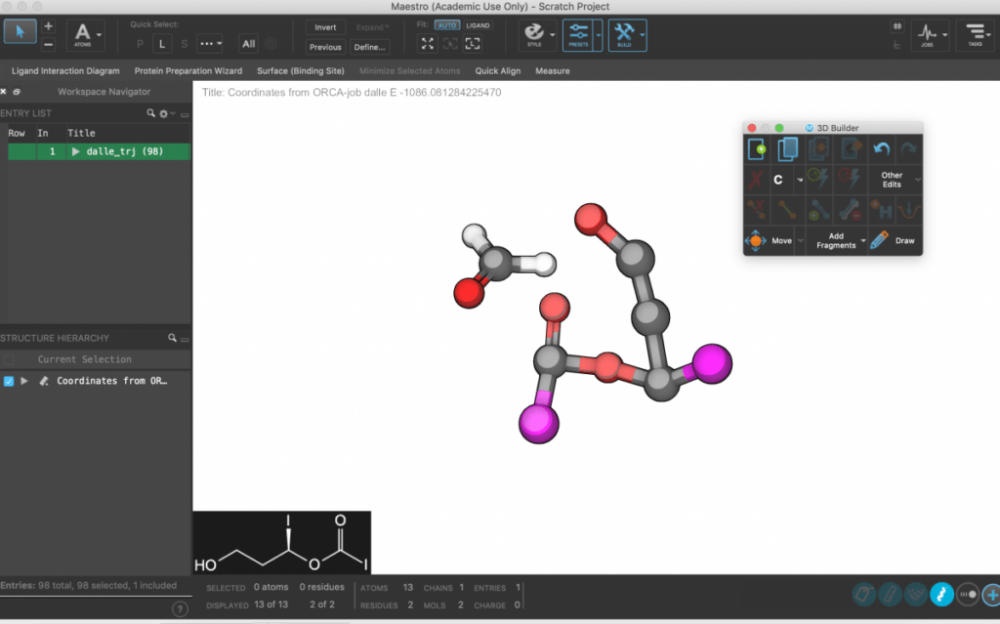
The second step is to perform some sort of geometry optimization calculation. Given that accuracy is not of grave importance, we can settle for one of the cheapest DFT calculation, the BP86 functional with the def2-SVP basis set. The following code can be fed as an input file to the free computational chemistry package Orca (https://orcaforum.kofo.mpg.de/).
! BP86 def2-svp opt
%geom
maxiter 500
end
*xyz 0 1
C 2.52090 2.68140 -1.30450
O 1.43580 2.17400 -1.58370
H 2.93990 2.63990 -0.29680
H 3.12710 3.18670 -2.05260
O 3.31800 1.57710 -0.20030
C 3.01120 0.39370 -0.19850
O 3.45230 0.23170 1.02630
I 2.38560 -0.94730 -0.28460
O 3.66110 3.59910 0.58280
C 3.76810 2.71210 1.61100
C 3.65840 1.39850 1.99460
C 3.53580 -0.09250 2.28610
I 3.51530 0.41740 3.52360
*After the calculation has finished, the trajectory of the molecule will be written into file called #_trj.xyz. This information can be directly used to make a 3D animation, using the free software Blender (https://www.blender.org/). Enable the preinstalled package “Import-Export: Atomic Blender PDB/XYZ”.
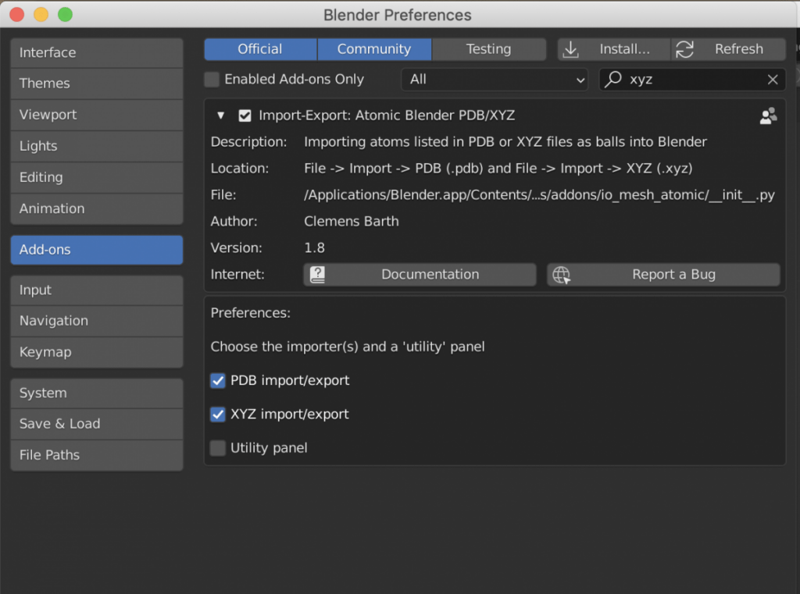
Then you are ready to import (File->Import->#_trj.xyz) the trajectory.
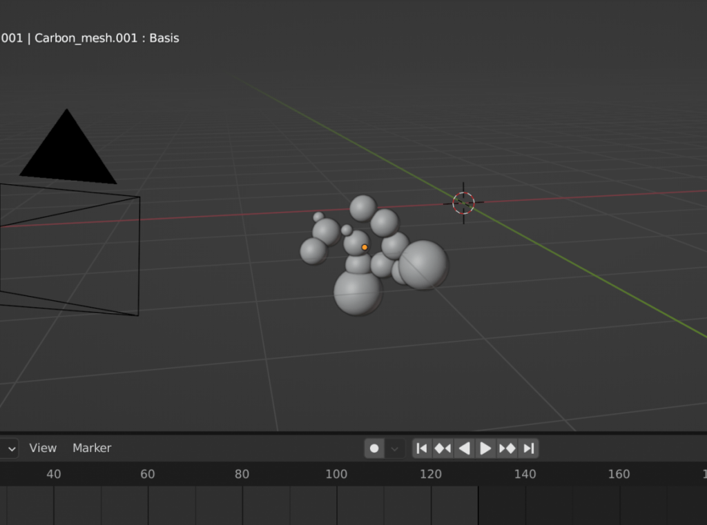
Now it’s time to create the background scene and change the shading.
The background is composed of three different elements.
1) Under the ‘World Properties’ tab, then surface can be set to an environmental texture/HDRI downloaded for free from https://polyhaven.com/. In this case, a scene of a pool was selected. The environmental texture will make the lighting of the scene look realistic without the need to add any light objects explicitely.
2) In the foreground of the scene, a simple liquid domain/flow emitter pair can be setup such that the water column will have realistic looking waves.
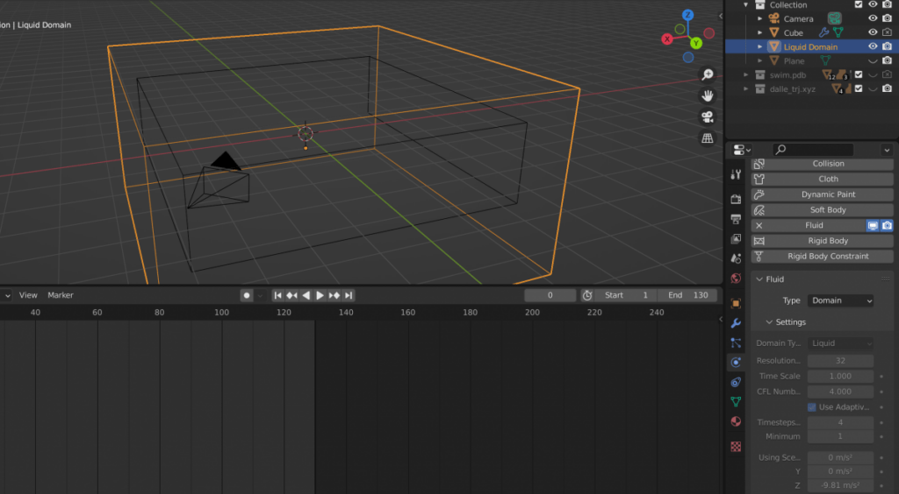
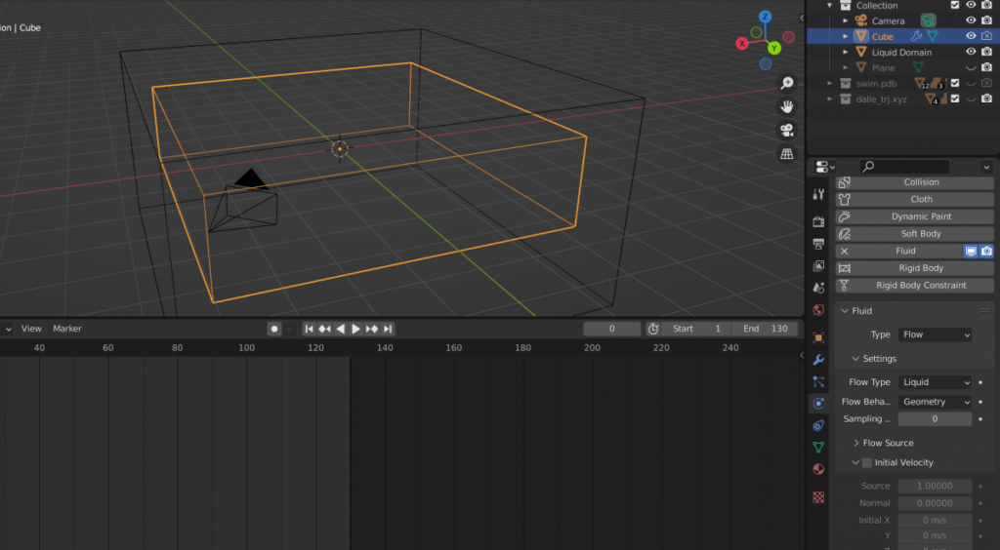
The color of the liquid can be set to a slightly blue color to give it the effect of being water.
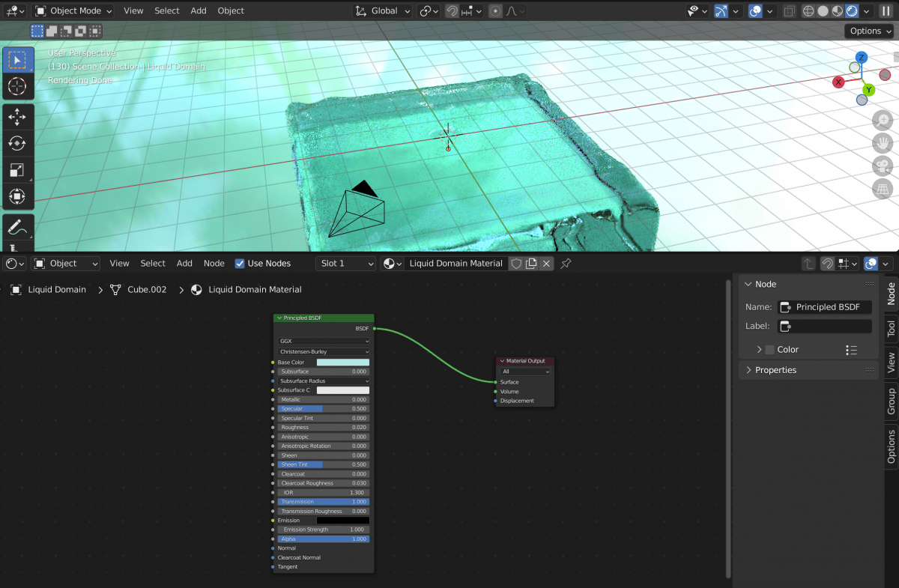
3) In the background of a scene, a fake pond surface will be used. This will save some computation time to calculate on the waves in the region that the camera will be focused on. This can be accomplished by extruding and beveling a plane.
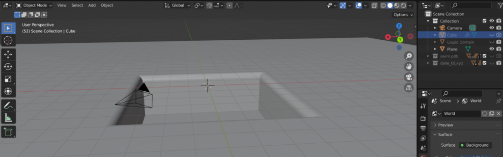
To make this flat plane look more realistic, we can feed a noise texture into a bump map into the normals of the shader of the plane. This will add distortions to the way that the plane reflects light. The roughness of the plane should also be set to zero.
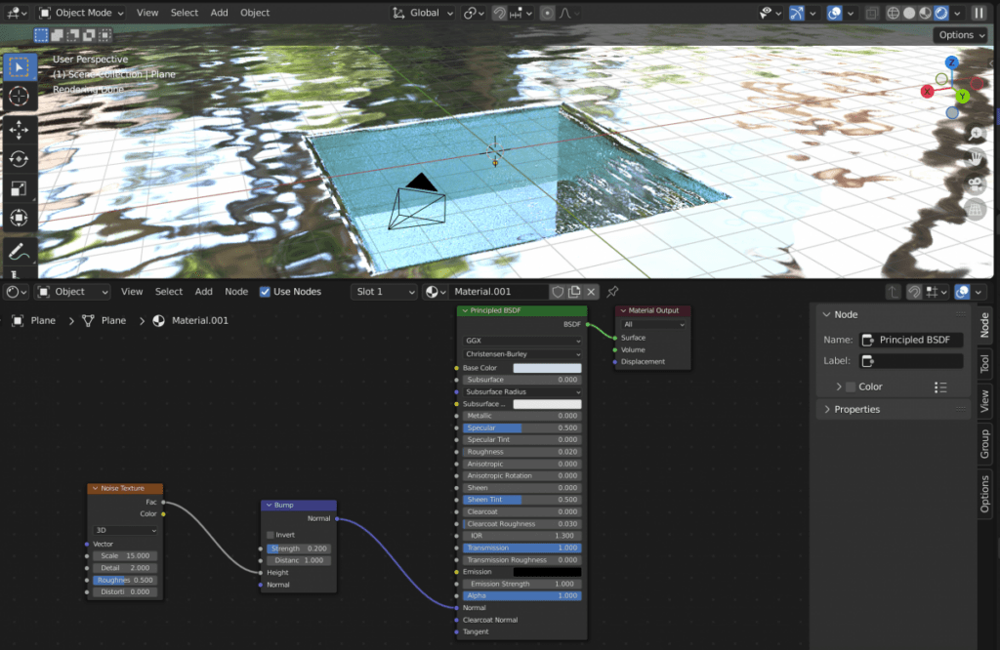
If you imported the #_trj.xyz file as a Mesh (as opposed to NURBS or Meta), then to change the shading you should select the hidden parent object and select ‘Use Nodes’. This will allow you to use the Shader Editor to finely tune the look of the atoms.
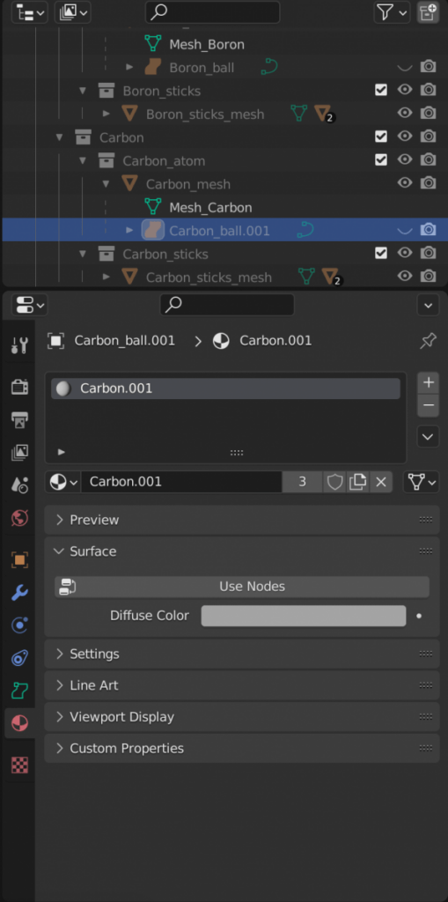
The final touches can now be made.
- For rendering, I recommend using Cycles instead of Eevee.
- Rendering between 4 and 20 samples per frame is usually enough.
- Under color management, the vew transform can be set to Filmic or Filmic Log.
Now the movie can be rendered as a series of .png files.
In the Video Editing tab, the sequence .png files can be added, placing a few frames of the first and last image at each end of the sequence to allow for clean visualizations of the starting and finishing geometries. This can now be rendered as a FFmpeg Video file.
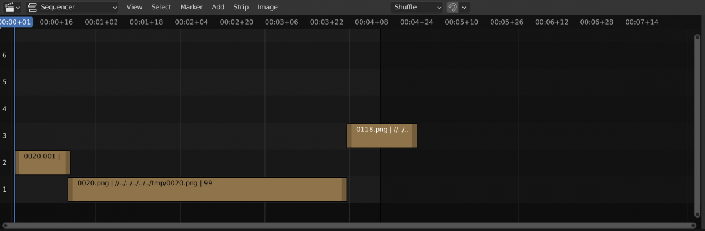
The result speaks for itself